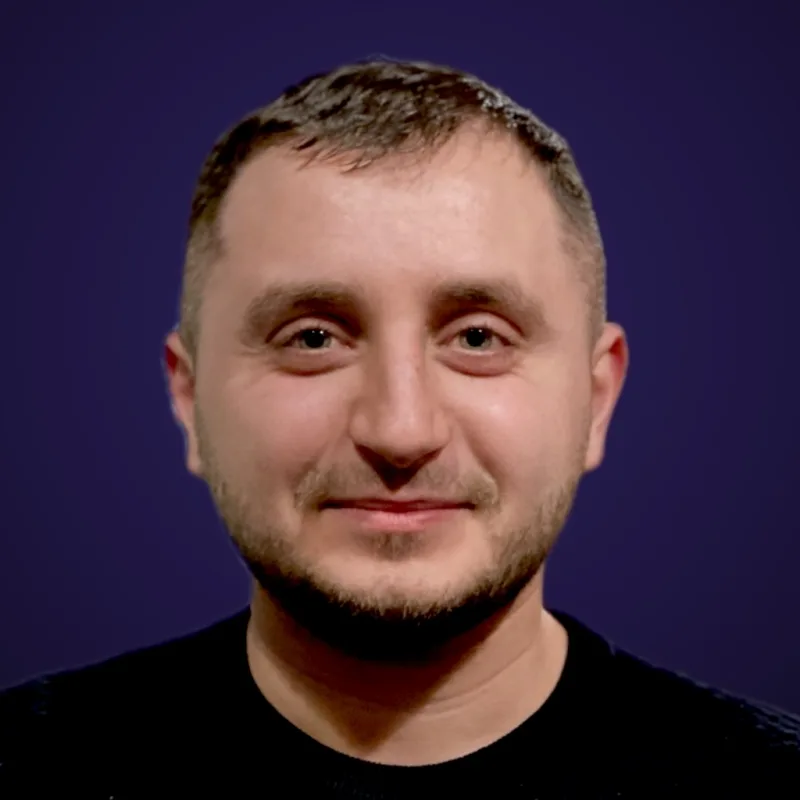

maib design system
The bank's shared UI component library used across product teams, micro-frontends for digital banking and a card management module for corporate clients.
- React
- Next.js
- Module Federation
- TypeScript
I build complete products, web platforms, SaaS apps and AI-powered products
end to end — from idea and architecture to a polished, production-ready launch.

I'm a Senior Software Engineer working across the full stack: React and Next.js on the frontend, Node.js and NestJS on the backend.
I build high-performance, scalable systems, from architecture and APIs to polished interfaces and AI-powered features.
The bank's shared UI component library used across product teams, micro-frontends for digital banking and a card management module for corporate clients.
A junk-free news platform that uses AI to filter clickbait and misinformation, built on Next.js with SSR, plus PressHub, an AI editorial workflow for journalists.
A social network for movie lovers: Next.js web app, Telegram Mini App, Web3 login with Solana and Internet Computer, and an x402 paid API for AI agents.
A web CAD for electrical engineering: interactive diagram editor with drag-and-drop, real-time electrical calculations and DXF import/export.
An all-in-one platform to create and sell online courses: LMS, marketing automation with a visual drag-and-drop funnel builder, and Stripe billing.
RAG pipelines over internal knowledge, intelligent workflows that automate routine processes, and AI-assisted spec-driven development with coding agents.
I dig into the product's goals, users and constraints, then turn them into a clear scope and plan.
I pick the stack and architecture that will grow with the product, from a design system to micro-frontends.
I ship in short iterations with regular demos, and add AI where it brings real value.
Performance, monitoring and analytics after release, then improvements based on real usage.
Micro-frontends for digital banking, the bank's design system, corporate card management and AI features with LLMs & RAG. Introduced AI-assisted, spec-driven development; mentoring and code reviews.
Web CAD for electrical engineering with Three.js, DXF import/export and real-time calculations.
Led front-end development of the Otherweb ecosystem (Otherweb, PressHub, Autoblogger) and built a company-wide UI kit. The company was later acquired by SAI Technologies.
SPOKK online pet insurance on micro-frontends, Kidzify AI cartoons for kids with Three.js, and the Dispatchly real-time load board.
Everact LMS: courses, quizzes, a visual funnel builder, Stripe billing and Module Federation.
Nokia supplier portals, the LUXXY marketplace, the Radio Kartina streaming app and Samocat scooter sharing.
Where it all started.
Bachelor's in Applied Mathematics, then a Master's in Applied Mathematics & Computer Science.
// 06. What's next?
Have a product, a project or an idea? Let's connect.